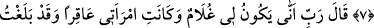

HZ. YAHYA’NIN DOĞUMU
7. (Allah buyurdu): “Ey Zekeriyya, biz sana bir oğul müjdeleriz, adı Yahyâ’dır.
Daha önce ona hiç kimseyi adaş yapmadık.”
8. (Zekeriyya) dedi ki: “Rabb’im! benim nasıl oğlum olur?! Karım kısır. Ben ise
ihtiyarlığın son sınırına vardım.”
9. Dedi ki: “Öyledir”; Rabb’in “O bana kolaydır, daha önce sen hiçbir şey
değilken seni de yaratmıştım” buyurdu.
10. Zekeriyya: “Rabb’im! (Çocuğum olacağına dair) bana bir alâmet ver.” dedi.
Allah: “Senin alâmetin sapa sağlam olduğun halde tam üç gece (ve gündüz)
insanlarla konuşmamandır.” buyurdu.
Allah meleğin lisânı üzere: “Ey Zekeriyya” buyurdu. Nitekim Âl-i İmran sûresinde
meleklerin ağzından şöyle buyurmuştu: “Zekeriyya, mâbedde durmuş namaz kılarken
melekler ona: “Allah sana, Yahya’yı müjdeler.” (Âl-i İmran, 3/39).
“Biz sana bir oğul müjdeleriz.” “Bişâret”, haber verilen kimsede sevinç meydana
getirecek şeyi ona haber vermektir. Onun “Adı Yahya dır. Daha evvel ona hiç kimseyi
adaş yapmadık.” Yani isminde ona ortak olan hiç kimse yoktur. Daha evvel “Yahya” adı
kimseye verilmemiştir. Bir çocuğa daha evvel hiç duyulmamış (garip) bir ismi, isim
olarak vermek; isimlendirilen o çocuğu yüceltmeyi (övmeyi) ifade eder. Bundan dolayı
Araplar ismin en fazla övücü, en fazla dikkat çekici ve ayıplanacak bir durumdan en
fazla uzak olmasına önem verirlerdi.
Zâdü’l-mesîr’de şöyle der: “Yahya (a.s.)’ın fazîleti, kendisinden daha evvel bu ismin
bir başkasına verilmemiş olmasından dolayı değildir. Çünkü kendisinden önce ismi
başkasına verilmemiş birçok insan vardır. Dolayısıyla bu bir fazilet belirtisi olamaz.
Fazilet, Hak Sübhânehû ve Teâlâ’nın Yahya (a.s.)’ı kendisine dost edinmesi, ismini
bizzat kendisi vermesi ve bu işi anne babasına havâle etmemesidir.” Nitekim bizzat
Allah Teâlâ’nın mü’minlerin annesi Zeyneb (r.anhâ)’yı Habîbi (a.s.) ile evlendirmesi
de bunun gibidir. Allah Teâlâ: “Zeyd, o kadından ilişiğini kesince biz onu, sana
nikahladık...” (el-Ahzab, 33/37) buyurur. Bu sebeple Hz. Zeynep, Peygamber (a.s.)’ın